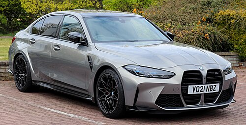
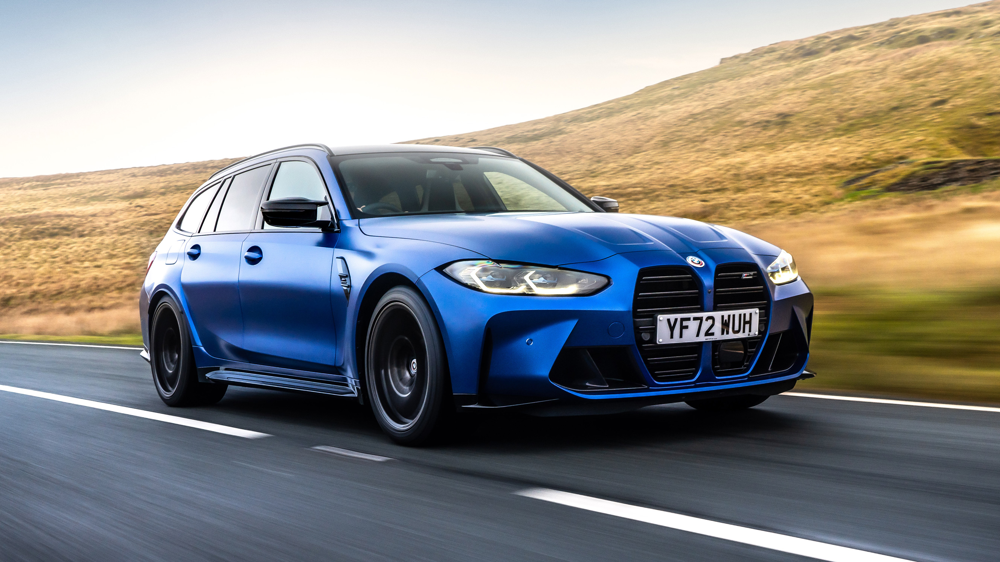

The M3 model was released in 2021. All-wheel drive (xDrive) is optional on the G80 M3, making it the first time that a M3 has not exclusively used a rear-wheel drive layout. A manual transmission is only available on rear-wheel drive models. BMW announced the launch of the first-ever M3 Touring in June 2022. Codenamed G81, it will be available along the sedan G80, the coupé M4 G82 and convertible M4 G83. The M3 is powered by the 3.0 L (183 cu in) BMW S58 straight-six engine that debuted in the G01 X3 M.
